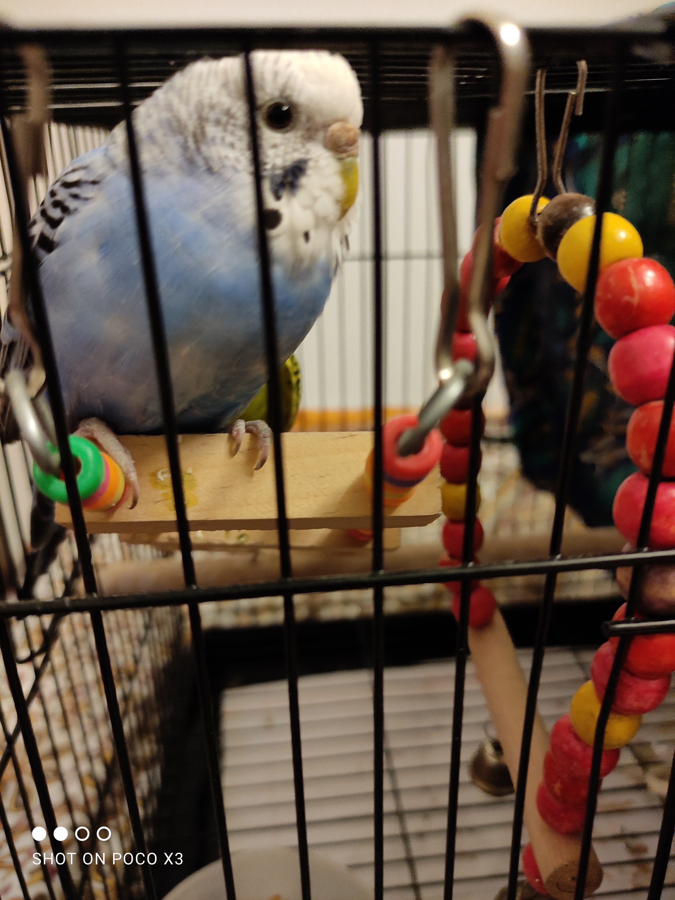
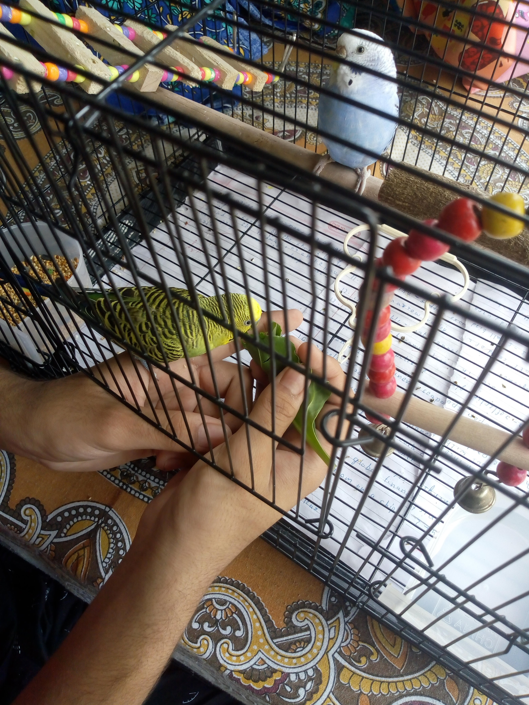
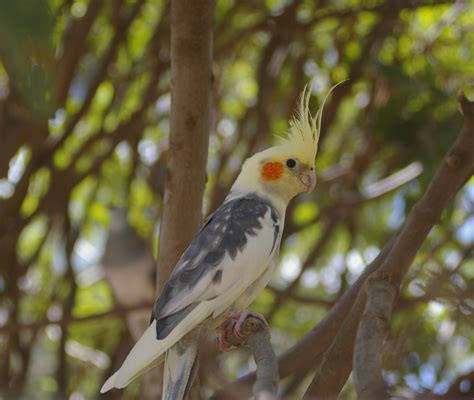
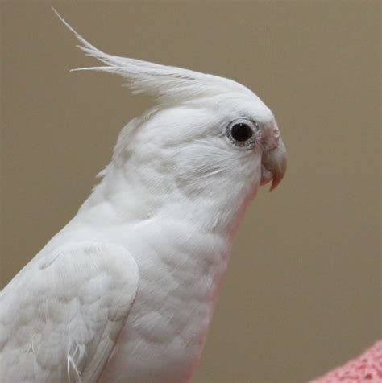

Top 5 most popular pet birds
Here are 5 most popular birds to keep:-
1. Parakeets(Budgies)
 
About 25 percent of bird parents keep some type of parakeet, making this colorful breed the most popular pet bird among parents, according to the APPA. There are dozens of different breeds of parakeet, but the most popular by far is the budgerigar, or budgie. And no wonder—they’re silly, sweet birds with big personalities that vary from bird to bird, says Blanchette. Pet parents also like their small stature: “Their size fits into most any home. Their noise level is low, they do not damage furniture and their toys are not destroyed as fast,” says Sue Dial of Michigan, who has a budgie named Gina.
2. Cockateils


At 22 percent, cockatiels rank just behind parakeets when it comes to the best birds for pets, according to their popularity in APPA’s survey. These pint-sized parrots are members of the cockatoo family, and their sunny, easy-going personalities score points with their parents.
3. Canries
Ranking third on the list of best bird pets are canaries. These cheerful, good-natured songsters require low-key TLC—keep your canary’s cage in a room where you hang out and they’ll be happy, says Anne Staudenmaier, VMD, an associate veterinarian in the Avian and Exotic department at Angell Animal Medical Center in Boston, Massachusetts. This is one reason why they are one of the best birds to have as pets.
4. Conure
These birds also rank among the best parrots for pets, according to the 8 percent of bird parents who have one. They come in all sizes and colors, from the smaller green-cheeked conure to the larger sun and blue-crowned conures.
5.Africen greys
The most popular bird among adopters is the African grey, Lewis says. The reason: Of all the birds that can talk, the African grey is considered the best talker, which is what attracts people to own one. But besides their talking ability, he says, this medium-size parrot is super intelligent, charming and sociable, making it one of the best parrots for pets.